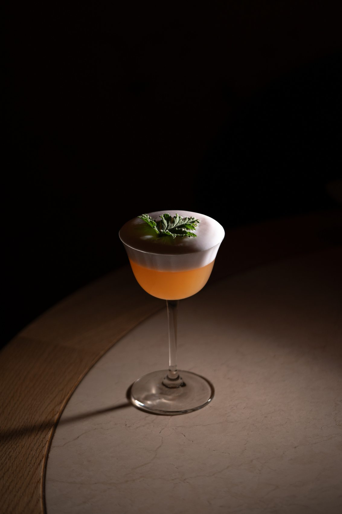
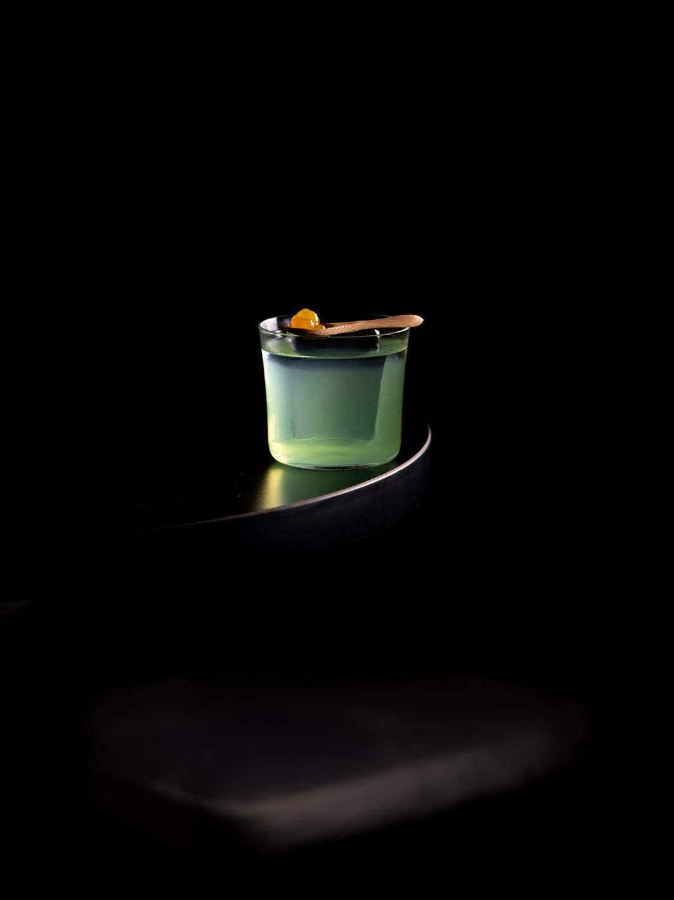
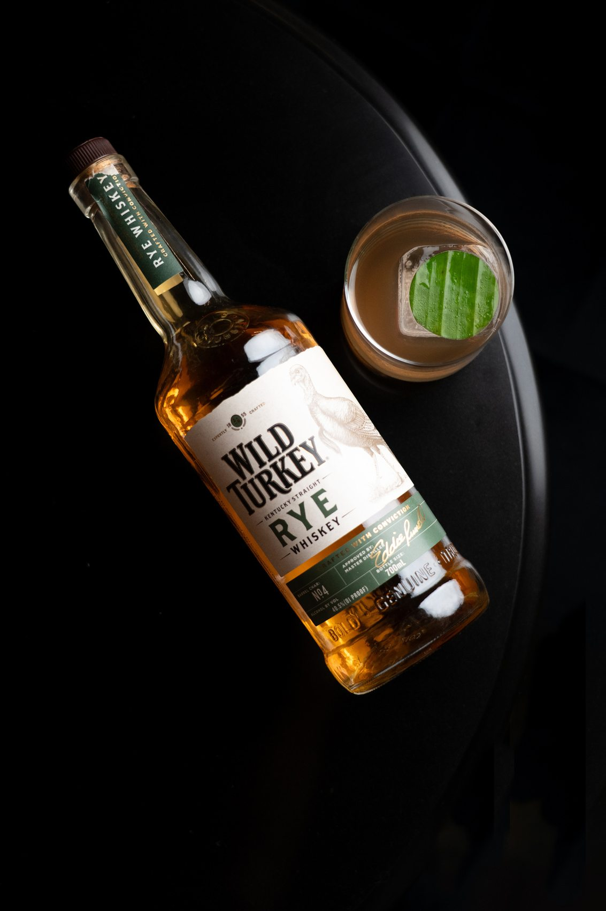

Artificial Light
Where darkness
tells the story
Controlled light, chiaroscuro and cinematic mood. Every shadow is a choice.

Geranium
Copenhagen · 3 Michelin stars. Signature juices and contemporary chiaroscuro. Concept and juices by Giulia Caffiero.



Krug × Fuoco Sacro
Sardinia · 1 Michelin star. Editorial photography for Krug. Featured in the official Fuoco Sacro book, Enrico Bartolini Collection.


